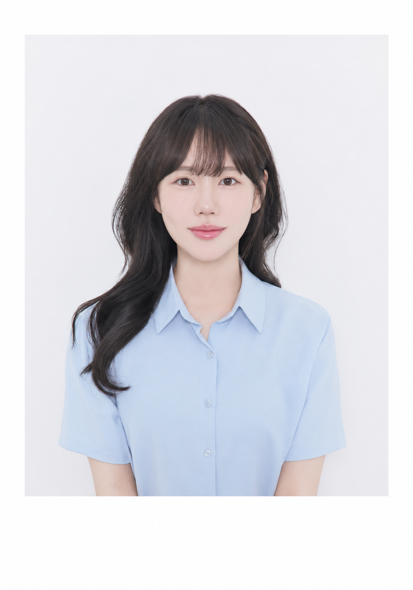
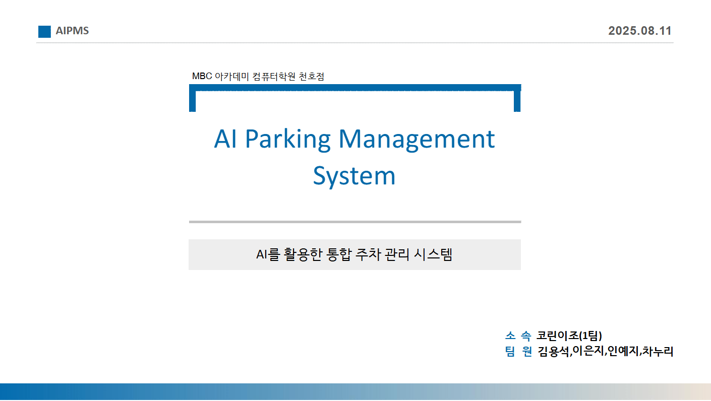

Between Ideas & Execution
CONNECTOR
아이디어와 구현 사이, 그 간격을 좁히는 사람.
Different Roles. One Perspective.
-

-
- 서로 다른 경험이 모여, 하나의 시야가 되었습니다.
- 기획부터 디자인, 퍼블리싱, 개발까지. 서로 다른 역할을 경험하며 하나의 서비스가 완성되는 과정을 배웠습니다.
이 경험을 바탕으로 사람과 기술 사이를 연결하는 기획자로 성장하고자 합니다. 기획의 의도를 이해하고, 구현의 현실까지 고려합니다.
아이디어가 실제 서비스가 되기까지 필요한 결정을 함께 봅니다.
MY APPROACH Understand. Connect. Solve.
-
01
UNDERSTAND
의도를 이해하다
-
02
CONNECT
관점을 연결하다
-
03
SOLVE
문제를 해결하다
From Planning to Development.
기획 → 디자인 → 퍼블리싱 → 개발. 각 단계에서 얻은 경험과 시각을
하나의 연결된 흐름으로 정리했습니다.
Four Experiences. One Perspective.
서로 다른 역할을 이해하는 경험은 더 넓은 시야로 이어졌습니다.
-
01 PLANNING
서비스의 방향을 설계하다
사용자의 요구를 분석하고, 필요한 기능과 정보 구조를 정의하는 과정을 경험했습니다.
-
02 DESIGN
사용자의 경험을 시각화하다
정보를 어떻게 배치하고 전달해야 사용자가 쉽고 직관적으로 이해할 수 있을지 고민했습니다.
-
03 PUBLISHING
설계를 실제 화면으로 구현하다
HTML, CSS, JavaScript를 활용해 반응형 레이아웃과 다양한 인터랙션을 구현했습니다.
-
04 DEVELOPMENT
서비스가 작동하는 구조를 이해하다
Java/Spring 기반 백엔드와 API 연동을 경험하며 데이터가 실제 화면에 전달되는 과정을 배웠습니다.
Ideas Into Reality.
프로젝트에서 어떤 문제를 발견하고, 어떤 관점으로 해결했는지 기록했습니다.
-
 WORK 01
COMMUNITY PLATFORM · 5인 팀
WORK 01
COMMUNITY PLATFORM · 5인 팀맛집 커뮤니티 게시판
MyBatis 기반 게시판에서 이미지 업로드와 DB 연동을 맡았습니다.
BACKEND · DBFOCUS · CONNECT CASE STUDY + -

WORK 02WEB APPLICATION · 4인 팀AIPMS (AI Parking Management System)
Spring Boot 기반 AI 스마트 주차 시스템에서 회원 · 인증 기능을 맡았습니다.
BACKEND · QAFOCUS · SOLVE CASE STUDY + -
 WORK 03
WEB · MOBILE · 1인
WORK 03
WEB · MOBILE · 1인네오팜 기업형 웹 · 모바일
웹 접근성 · 표준 문제를 분석해 기업형 웹과 모바일 페이지를 다시 설계 · 구현했습니다.
PLAN · DESIGN · PUBLISHFOCUS · UNDERSTAND CASE STUDY + -
 WORK 04
RESPONSIVE WEB · 1인
WORK 04
RESPONSIVE WEB · 1인삼성 라이온즈 반응형 웹
실제 경기 데이터를 Node.js 중간 서버로 연결한 PC · 태블릿 · 모바일 반응형 웹입니다.
PLAN · DESIGN · PUBLISH · DEVFOCUS · CONNECT CASE STUDY +
Let's Connect.
서로 다른 생각이 만나 더 나은 가능성이 됩니다.
함께 고민하고, 연결하며, 새로운 가치를 만들어가고 싶습니다.
- 01 · PLANNING
- 02 · DESIGN
- 03 · PUBLISHING
- 04 · DEVELOPMENT
- YOU